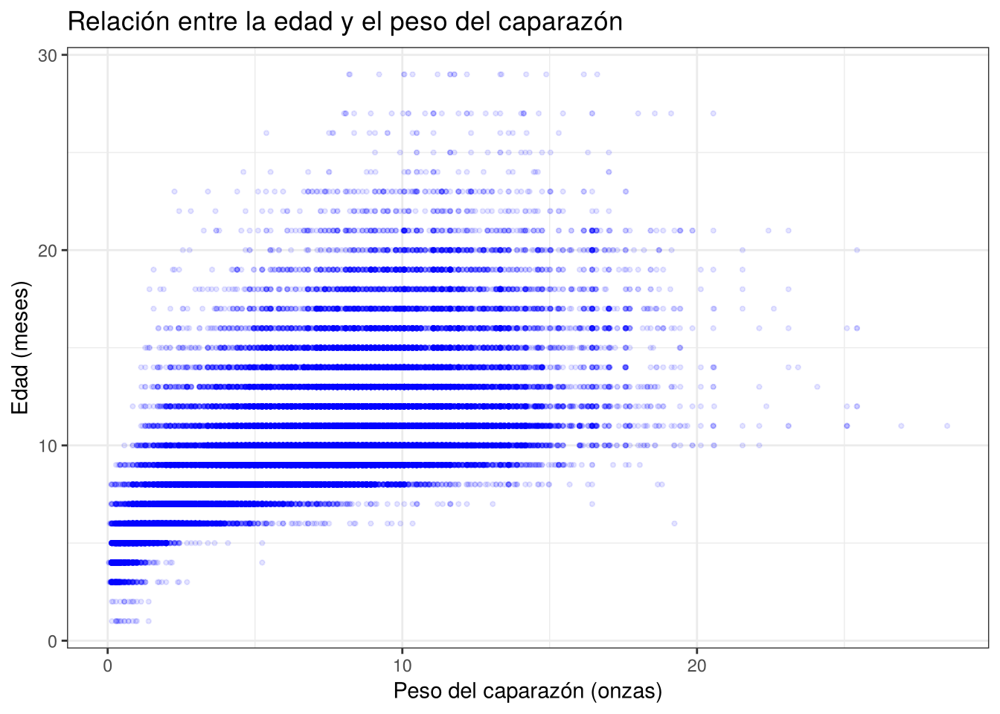

4 Correlación lineal
En el análisis exploratorio se vio que la edad de los cangrejos aumenta a medida que aumentan sus medidas físicas. En este capítulo se cuantifica la intensidad y la dirección de esas relaciones con los coeficientes de correlación de Pearson, Spearman y Kendall, y se verifica si son estadísticamente significativas.
Para interpretar los coeficientes se usa la escala de las notas de clase:
| Rango de valores | Interpretación |
|---|---|
| \(-1{,}00\) a \(-0{,}75\) | Correlación negativa muy fuerte |
| \(-0{,}75\) a \(-0{,}50\) | Correlación negativa moderada |
| \(-0{,}50\) a \(-0{,}25\) | Correlación negativa débil |
| \(-0{,}25\) a \(0{,}25\) | Sin correlación o muy débil |
| \(0{,}25\) a \(0{,}50\) | Correlación positiva débil |
| \(0{,}50\) a \(0{,}75\) | Correlación positiva moderada |
| \(0{,}75\) a \(1{,}00\) | Correlación positiva muy fuerte |
Carguemos las librerías y los datos:
library(tidyverse)
library(nortest)
df <- read.csv("datos/train.csv") %>%
select(-id) %>%
rename(
sexo = Sex,
largo = Length,
diametro = Diameter,
altura = Height,
peso = Weight,
peso_carne = Shucked.Weight,
peso_visceras = Viscera.Weight,
peso_caparazon = Shell.Weight,
edad = Age
) %>%
mutate(
altura = ifelse(altura == 0, NA, altura),
altura = ifelse(is.na(altura), mean(altura, na.rm = TRUE), altura)
)4.1 Correlación de Pearson
Para el análisis de Pearson se toma el peso del caparazón, que en el análisis exploratorio fue la variable con la relación más clara con la edad. Las preguntas a resolver son:
- Realizar un diagrama de dispersión entre la edad y el peso del caparazón.
- Verificar si las dos variables presentan un comportamiento normal.
- Calcular el coeficiente de correlación de Pearson.
- Determinar si la correlación es estadísticamente significativa.
- Calcular el intervalo de confianza para el coeficiente de correlación.
1. Diagrama de dispersión
df %>%
ggplot(aes(x = peso_caparazon, y = edad)) +
geom_point(color = "blue", alpha = 0.1, size = 0.8) +
labs(
title = "Relación entre la edad y el peso del caparazón",
x = "Peso del caparazón (onzas)",
y = "Edad (meses)"
) +
theme_bw()
Figura 4.1: Relación entre la edad y el peso del caparazón
El diagrama muestra una relación positiva: los cangrejos con caparazón más pesado tienden a ser mayores. La tendencia es aproximadamente lineal para pesos bajos y medios, pero la dispersión de la edad aumenta a medida que aumenta el peso, lo que indica que no hay homocedasticidad.
2. Normalidad
Como la muestra tiene más de \(5.000\) datos, usamos las pruebas de Kolmogorov-Smirnov y Lilliefors:
##
## Asymptotic one-sample Kolmogorov-Smirnov test
##
## data: scale(df$peso_caparazon)
## D = 0.03897, p-value < 2.2e-16
## alternative hypothesis: two-sided##
## Lilliefors (Kolmogorov-Smirnov) normality test
##
## data: df$peso_caparazon
## D = 0.03897, p-value < 2.2e-16##
## Asymptotic one-sample Kolmogorov-Smirnov test
##
## data: scale(df$edad)
## D = 0.1459, p-value < 2.2e-16
## alternative hypothesis: two-sided##
## Lilliefors (Kolmogorov-Smirnov) normality test
##
## data: df$edad
## D = 0.1459, p-value < 2.2e-16Con una confianza del \(95\%\), se observa que ni el peso del caparazón (\(D = 0{,}0390,\ p\text{-valor} < 0{,}001\)) ni la edad (\(D = 0{,}1459,\ p\text{-valor} < 0{,}001\)) provienen de una distribución normal. Por lo tanto, los supuestos de la correlación de Pearson no se cumplen del todo. De todas formas, se hace el cálculo completo para comparar después con los coeficientes no paramétricos.
3. Coeficiente de correlación de Pearson paso a paso
El estimador muestral es:
\[ r = \frac{\sum_{i=1}^{n} (x_i - \bar{x})(y_i - \bar{y})}{\sqrt{\sum_{i=1}^{n} (x_i - \bar{x})^2 \sum_{i=1}^{n} (y_i - \bar{y})^2}} = \frac{S_{xy}}{\sqrt{S_{xx} S_{yy}}} \]
# 1) Vectores y tamaño muestral
x <- df$peso_caparazon
y <- df$edad
n <- length(x)
# 2) promedios
xbar <- sum(x) / n
ybar <- sum(y) / n
# 3) desviaciones
xc <- x - xbar
yc <- y - ybar
Sxy <- sum(xc * yc) # sumatoria de productos centrados
Sxx <- sum(xc^2) # sumatoria de cuadrados centrados de x
Syy <- sum(yc^2) # sumatoria de cuadrados centrados de y
# 4) Coeficiente de correlación de Pearson
r <- Sxy / sqrt(Sxx * Syy)
# 5) Resultados obtenidos y r
data.frame(
n = n,
prom_peso_caparazon = xbar,
prom_edad = ybar,
Sxy = Sxy,
Sxx = Sxx,
Syy = Syy,
r_pearson = r
)## n prom_peso_caparazon prom_edad Sxy Sxx Syy r_pearson
## 1 74051 6.72387 9.967806 559153.7 951373.9 746559.2 0.6634733Usando la función cor() tenemos
## [1] 0.66347334. Significancia de la correlación
Para \(H_0: \rho = 0\) vs \(H_1: \rho \neq 0\), el estadístico de prueba es \(t_0 = \dfrac{r\sqrt{n-2}}{\sqrt{1-r^2}}\) y se rechaza \(H_0\) si \(|t_0| > t_{\alpha/2,\, n-2}\).
## [1] 241.3045# 7) Valor crítico t_(α/2, gl) para α = 0.05 (bilateral)
alpha <- 0.05
t_tab <- qt(1 - alpha/2, df = gl)
t_tab## [1] 1.959996if (abs(t_0) > t_tab) {
decision <- "Rechazar H0: la correlación es significativa"
} else {
decision <- "No rechazar H0: no hay evidencia suficiente de correlación"
}
decision## [1] "Rechazar H0: la correlación es significativa"## [1] 05. Intervalo de confianza
Usando la transformación \(Z\) de Fisher, un intervalo de confianza del \(95\%\) para \(\rho\) es:
\[ \tanh\left( \operatorname{arctanh}(r) - \frac{Z_{1-\alpha/2}}{\sqrt{n-3}} \right) \leq \rho \leq \tanh\left( \operatorname{arctanh}(r) + \frac{Z_{1-\alpha/2}}{\sqrt{n-3}} \right) \]
# 8) Intervalo de confianza del 95% vía Fisher z
z0 <- atanh(r)
# Error estándar de z
se_z <- 1 / sqrt(n - 3)
# Valor crítico z_(1-α/2)
z_tab <- qnorm(1 - alpha / 2)
# Intervalo en la escala z
ci_z <- c(z0 - z_tab * se_z, z0 + z_tab * se_z)
# límite inferior y superior del IC para rho
ci_r <- tanh(ci_z)
ci_r## [1] 0.6594219 0.6674861Usando la función cor.test() nos queda:
##
## Pearson's product-moment correlation
##
## data: x and y
## t = 241.3, df = 74049, p-value < 2.2e-16
## alternative hypothesis: true correlation is not equal to 0
## 95 percent confidence interval:
## 0.6594219 0.6674861
## sample estimates:
## cor
## 0.6634733El análisis de correlación de Pearson entre el peso del caparazón (onzas) y la edad (meses) mostró un coeficiente \(r = 0{,}6635\ (IC_{95\%} = (0{,}6594;\ 0{,}6675))\), lo que indica una correlación positiva moderada: a mayor peso del caparazón, mayor es la edad del cangrejo. La prueba de significancia (\(t_{(74049)} = 241{,}30,\ p\text{-valor} < 0{,}001\)) permitió rechazar la hipótesis nula de ausencia de correlación. El intervalo de confianza es muy estrecho por el gran tamaño de la muestra. Además, \(r^2 = 0{,}44\), es decir, alrededor del \(44\%\) de la variabilidad de la edad se asocia linealmente con el peso del caparazón.
4.1.1 Contraste para \(\rho = \rho_0 \neq 0\)
Con un tamaño de muestra tan grande, rechazar \(\rho = 0\) no dice mucho. Resulta más informativo contrastar si la correlación supera un valor de referencia. Probemos si la correlación poblacional es igual a \(0{,}6\):
\[ H_0: \rho = 0{,}6 \quad \text{vs} \quad H_1: \rho \neq 0{,}6 \]
El estadístico de prueba es \(Z_0 = \left[ \operatorname{arctanh}(r) - \operatorname{arctanh}(\rho_0) \right] \sqrt{n - 3}\) y se rechaza \(H_0\) si \(|Z_0| > Z_{\alpha/2}\):
## [1] 28.80244## [1] 1.959964## [1] 1.999073e-182## [1] "Se rechaza H0"Como \(|Z_0| = 28{,}80 > 1{,}96\), se rechaza la hipótesis nula (\(p\text{-valor} < 0{,}001\)). La correlación entre el peso del caparazón y la edad es significativamente distinta de \(0{,}6\), y como \(r = 0{,}6635\) y el intervalo de confianza está completamente por encima de \(0{,}6\), se puede afirmar que la correlación es mayor a ese valor.
4.2 Correlación de Spearman
Como las variables no tienen comportamiento normal y la relación no es completamente lineal, el coeficiente de Spearman es más adecuado para estos datos. Este coeficiente mide la relación monótona entre las variables usando sus rangos. Las hipótesis son:
\[ H_0: \rho_S = 0 \quad \text{vs} \quad H_1: \rho_S \neq 0 \]
Veamos el coeficiente de correlación y su significancia con cor.test():
##
## Spearman's rank correlation rho
##
## data: x and y
## S = 1.7834e+13, p-value < 2.2e-16
## alternative hypothesis: true rho is not equal to 0
## sample estimates:
## rho
## 0.736481El análisis de correlación de Spearman entre el peso del caparazón y la edad mostró un coeficiente \(\rho_S = 0{,}7365\), que corresponde a una correlación positiva moderada, muy cerca del límite de una correlación muy fuerte. La prueba de significancia (\(S = 1{,}7834 \times 10^{13},\ p\text{-valor} < 0{,}001\)) permite rechazar la hipótesis nula de ausencia de correlación. El valor de Spearman es mayor que el de Pearson (\(0{,}6635\)), lo que confirma que la relación es monótona pero no del todo lineal, tal como se veía en el diagrama de dispersión.
4.3 Correlación de Kendall
El coeficiente de Kendall (\(\tau\)) evalúa la concordancia entre todos los pares posibles de observaciones:
\[ \tau = \frac{n_c - n_d}{\frac{1}{2}n(n-1)} \]
donde \(n_c\) es el número de pares concordantes y \(n_d\) el de pares discordantes. Es más robusto que Spearman cuando hay empates, lo que lo hace apropiado para la edad. Las hipótesis son:
\[ H_0: \tau = 0 \quad \text{vs} \quad H_1: \tau \neq 0 \]
Con \(74.051\) observaciones hay más de \(2.700\) millones de pares posibles, por lo que el siguiente cálculo puede tardar uno o dos minutos:
##
## Kendall's rank correlation tau
##
## data: x and y
## z = 225.27, p-value < 2.2e-16
## alternative hypothesis: true tau is not equal to 0
## sample estimates:
## tau
## 0.5816657El coeficiente de Kendall entre el peso del caparazón y la edad es \(\tau = 0{,}5817\), que indica una correlación positiva moderada y significativa (\(z = 225{,}27,\ p\text{-valor} < 0{,}001\)). Este valor quiere decir que, si se toman dos cangrejos al azar, es bastante más probable que el de mayor peso de caparazón sea también el de mayor edad que lo contrario. La función cor.test() calcula la versión \(\tau_b\), que ajusta el denominador por los empates.
El valor de Kendall es menor que el de Spearman, lo cual es habitual porque los dos coeficientes están en escalas diferentes. En conjunto, los tres coeficientes (\(r = 0{,}6635\), \(\rho_S = 0{,}7365\) y \(\tau = 0{,}5817\)) coinciden en que existe una relación positiva, moderada y significativa entre el peso del caparazón y la edad.